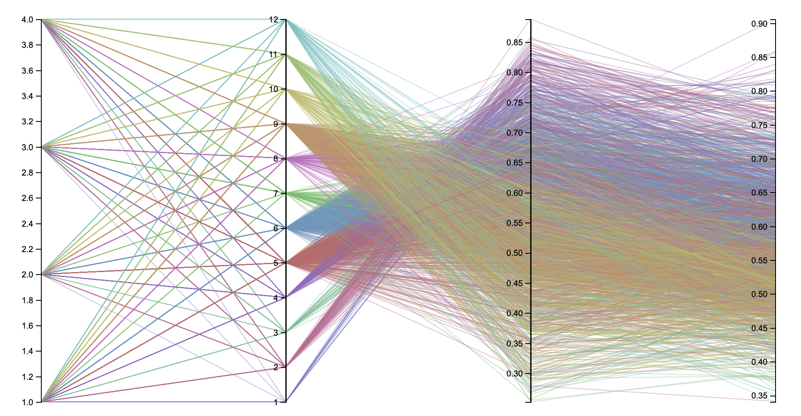
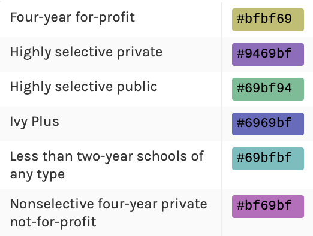
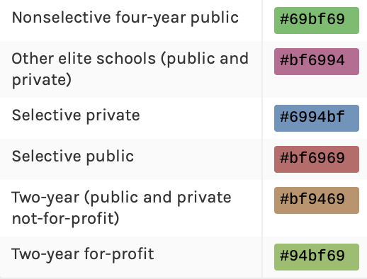

|  |   |
|---|
| Variable | Description |
|---|---|
| region | Census region: 1 = Northeast 2 = Midwest 3 = South 4 = West |
| tier | Selectivity and type combination: 1 = Ivy Plus 2 = Other elite schools (public and private) 3 = Highly selective public 4 = Highly selective private 5 = Selective public 6 = Selective private 7 = Nonselective 4-year public 8 = Nonselective 4-year private not-for-profit 9 = Two-year (public and private not-for-profit) 10 = Four-year for-profit 11 = Two-year for-profit 12 = Less than two year schools of any type |
| par_rank | Mean parental income rank |
| k_rank | Mean kid earning rank |
Color encoding was based on the prototype generated by RAWGraphs.
One continuous line from region all the way to k_rank is one record. The lower the tier number is, the better the school is. The higher the par_rank or k_rank is, the higher the income is.
| Done? | Letter | Justification |
|---|---|---|
| A- | Created Prototype using RAWGraphs. Implemented in D3 using the same encodings as in the prototype. Included interpretation. | |
| A | Implemented a parallel coordinates plot in D3. Include title, caption, axis labels, color encoding, and what I've learn. | |
| A+ | Created highlight for interesting data point in D3. Included interpretation about highlighted data point. |
Some limitations using RAWGraphs: cannot add title, caption, label, legend; cannot sort data; legend cannot be sorted.
I removed tier 13 and tier 14 with python script since they are outliers for me.